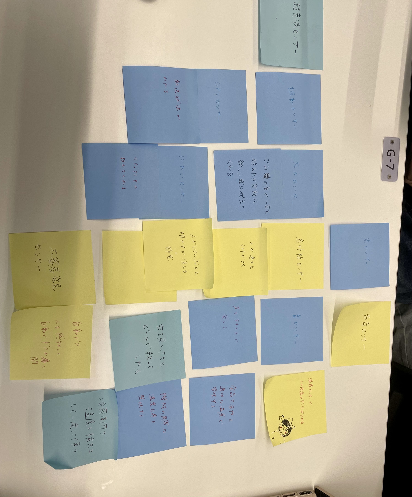
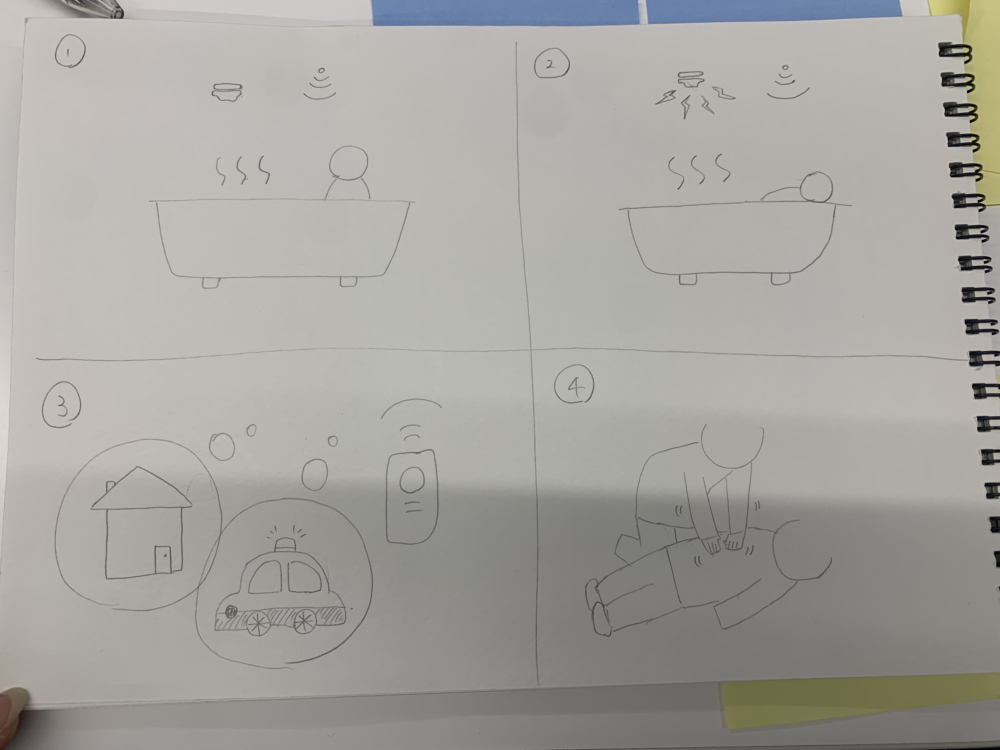

第三回
なにができそうか考える３回目
＜グループで出た案＞

GPSセンサーや赤外線センサー、不審者発見センサーなど、人の動きに反応するセンサーの案が多かった。
＜my idea＞

急変者発見システム
具体的な例として、お風呂場につけるセンサーである。
私自身も貧血気味で、少しでも長く湯船に浸かっていると、のぼせてしまうことがある。お風呂場で倒れてしまったこともある。
私のように、高齢者や貧血気味の方などが、のぼせてしまったり、急に体調を崩してしまった場合、特に一人で住んでいる方には、
誰かに助けを求めることが難しいと思った。
なので、赤外線センサーで人の動きに感知し、ある一定時間動きが見られなかったら、あらかじめ登録してある家族や親族、病院、警察
などに連絡がいくというシステムがあったらいいなと思った。
それにより、発見が早まり、大事に至らないケースもあると考えられる。
ただ監視の目が増えるという技術のマイナスのイメージで捉えるのではなく、しっかり誰かの役に立つものであるということが認知せれ、
活用の幅が広がればいいなと思う。